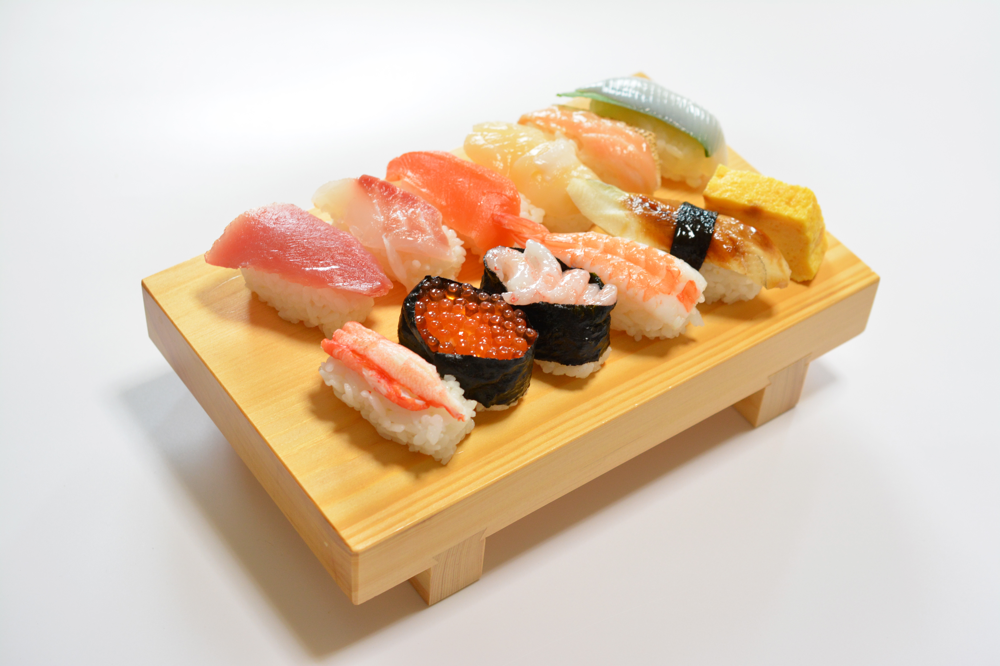
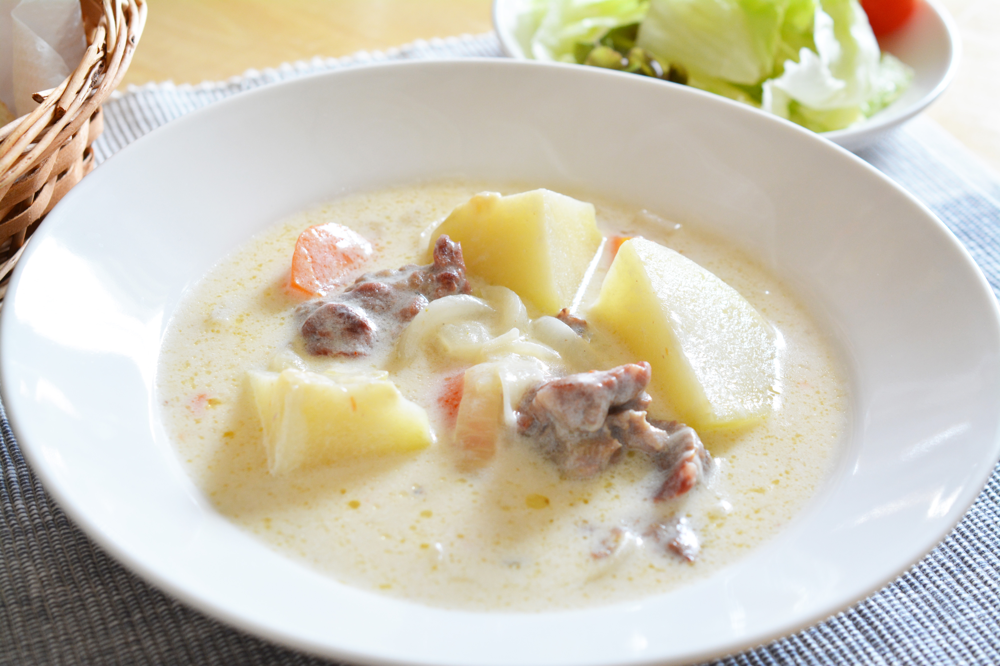
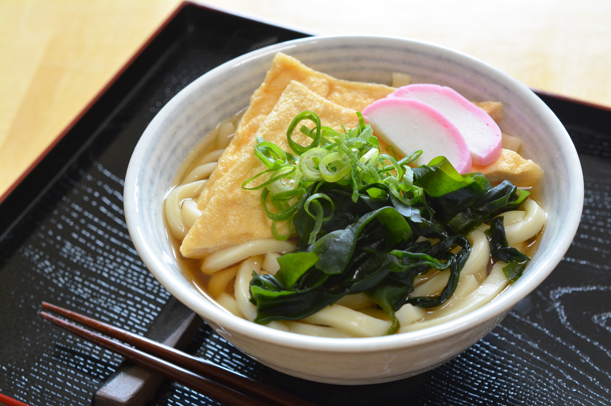
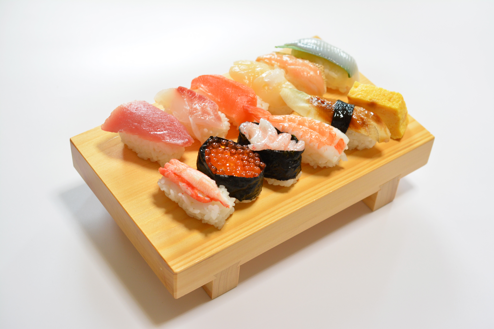
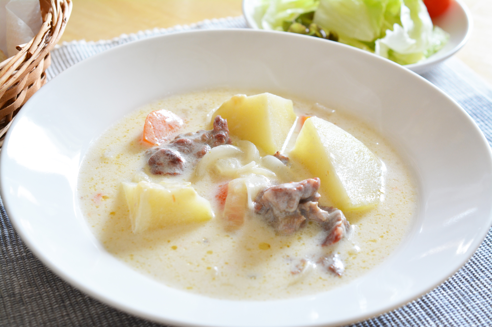
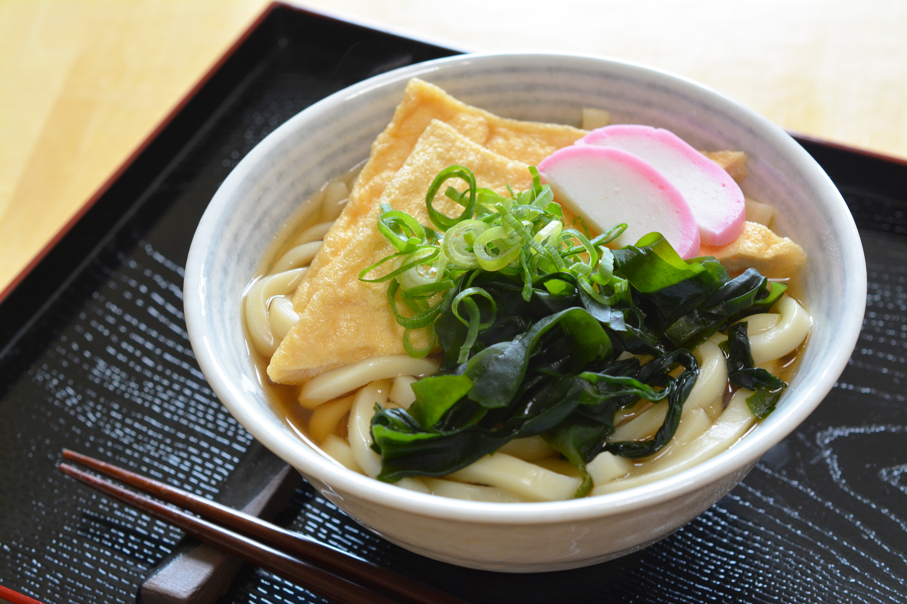
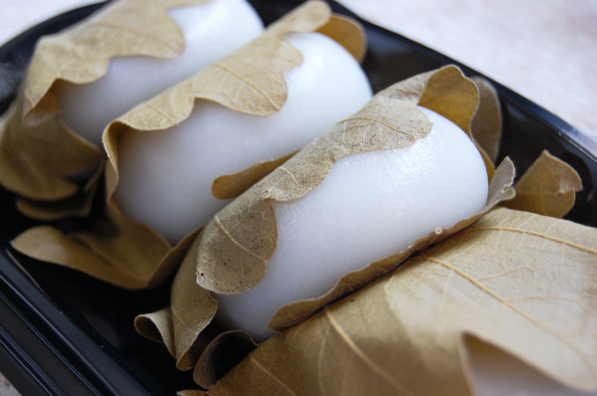

お寿司
お寿司がとっても大好きで、肉派か魚派だったら魚派なくらいお寿司が好きです！ 一番好きなネタはマグロ、次点でサーモン、エビとかです！誕生日で毎回回転寿司行くくらいは好きです！

シチュー
カレーも好きだけど、どちらかといえばシチュー派です！ あのクリーミーな味が大好きです!もちろん、ビーフシチューも好きです！
うどん
うどん！特にトッピングで明太子、とろろ、温玉がのったのが好きです！ ラーメンと一緒で朝に食べてました！(笑)
お寿司がとっても大好きで、肉派か魚派だったら魚派なくらいお寿司が好きです！ 一番好きなネタはマグロ、次点でサーモン、エビとかです！誕生日で毎回回転寿司行くくらいは好きです！
カレーも好きだけど、どちらかといえばシチュー派です！ あのクリーミーな味が大好きです!もちろん、ビーフシチューも好きです！
うどん！特にトッピングで明太子、とろろ、温玉がのったのが好きです！ ラーメンと一緒で朝に食べてました！(笑)
お餅は一番、こし餡が好きです！抹茶、きな粉とかも食べます！
